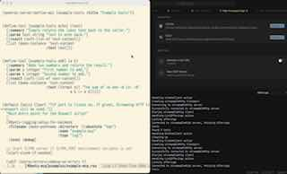
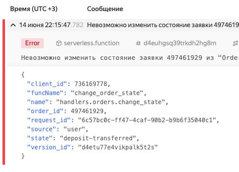

Страница 4
Каково это, быть многоруким Шивой?
posted on 2025-11-09

Иногда меня спрашивают: "Саша, как ты все успеваешь?" Но обычно эти люди не подозревают, что успеваю я очень малую часть того, что задумано. У меня постоянно, есть куча каких-то проектов и идей, над которыми хочется поработать. Снаружи может казаться, что я успеваю многое, но на самом деле я делаю лишь небольшую часть из того, что запланировал. А все остальные планы копятся и копятся.
Почему я использую package-inferred ASDF стиль в своих библиотеках
posted on 2025-08-24
C package-inferred ASDF, тебе не надо задумываться о том, какие зависимости есть между твоими файлами. Точнее задумываеться конечно надо, но исключается ситуация, когда ты прописал их в неправильном порядке.
Например, если ты добавляешь в один из файлов использование символа, который определен в другом файле как функция, то нужно поменять местами эти модули в описании ASDF системы.
Современный i18n с Fluent
posted on 2025-08-17
Периодически я просматриваю новые библиотеки, которые добавляются в репозиторий https://ultralisp.org. Недавно мне попалась Common Lisp библиотека для интернационализации программ на Common Lisp. Она называется Fluent.
Свой Code Assistant
posted on 2025-07-20
Все выходные я провозился с созданием своего собственного Code Assistant. Очень интересно было разобраться в том, как вообще все это работает. К сожалению, статей именно про устройство кодовых ассистантов не так уж много.
Как продвигаются дела с MCP фреймфорком для Common Lisp
posted on 2025-06-29

Привет, друзья! Сегодня хочу дать небольшой апдейт по тому, как продвигаются дела с MCP-фреймворком для того, чтобы можно было писать MCP-сервера на Common Lisp.
VoiceInk - opensource альтернатива для SuperWhisper
posted on 2025-06-16

Некоторое время назад я посетил семинар, посвященный вайб-кодингу. Там коллега в лайв-режиме показывал, как он создает код с помощью нейросети, используя голосовой ввод. Я очень удивился, потому что стандартный голосовой ввод на маке часто путает слова. Когда ты диктуешь ему по-русски, он часто неправильно воспринимает текст, если в нем используются английские термины, например, названия функций. Голосовой ввод на маках все это путает и выводит в лучшем случае что-то неразборчивое или далекое от того, что ты просил.
Почему я ломаю обратную совместимость
posted on 2025-06-15
Сначала хотел сделать пост про то, почему я редко сохраняю обратную совместимость в своих open-source библиотеках. Вот недавно как раз сделал обновление библиотеки Reblocks, в которой поломал обратную совместимость, причем довольно серьезно.
Про структурное логгирование в Python и Yandex Cloud Function
posted on 2025-06-14

Сегодня я продолжал возиться со своим pet-project, который одной ногой работает в SaleBot, а второй - использует Yandex Cloud Functions и YDB для того, чтобы запускать более сложную бизнес-логику.
Как прошёл AI Code Jam в Яндексе
posted on 2025-06-04

Вчера у нас был внутренний яндексовый хакатон. Мы изучали, как работают агентские системы. Задания можно было выбрать любые, мы в нашей команде решили написать агентскую систему для работы с социальной сетью.
Обещанного три года ждут
posted on 2025-05-25

Обещанного три года ждут. Или нет?
Ещё в марте говорил, что буду держать вас в курсе того, как проходит моё обучение в университете Zerocoder. Но в последнее время ничего не писал. На самом деле был очень занят — дорабатывал свои библиотеки, связанные с Reblocks.
Created with passion by 40Ants